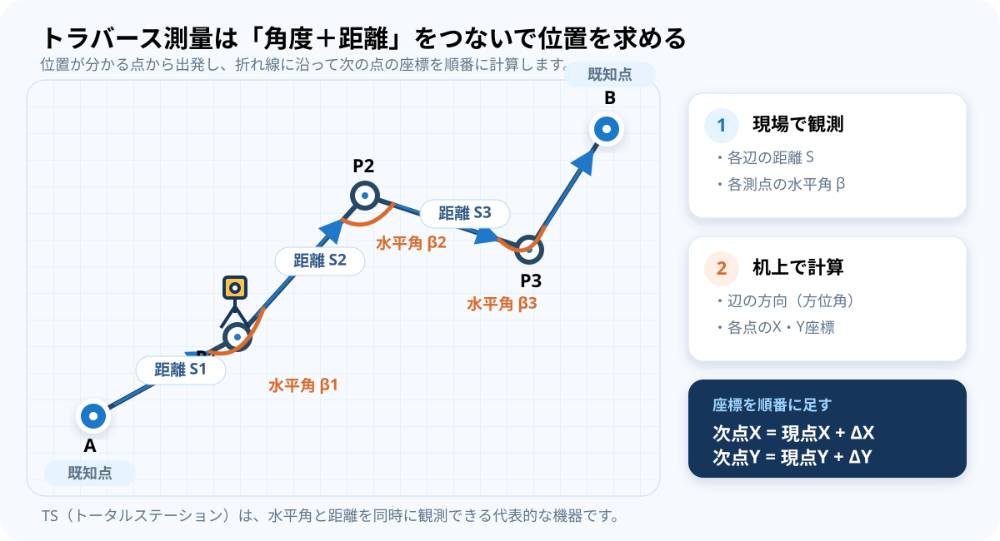
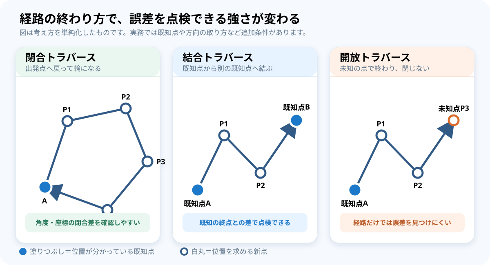
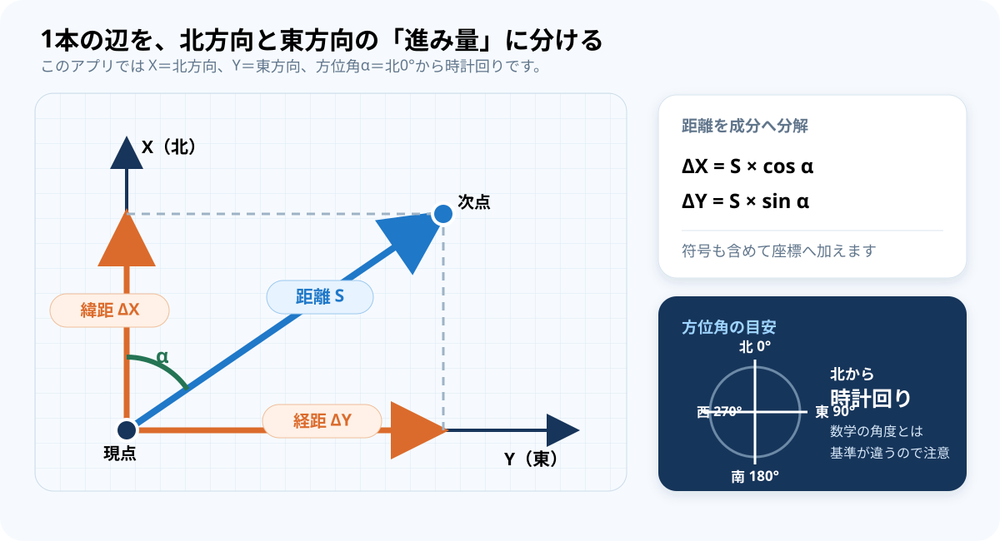
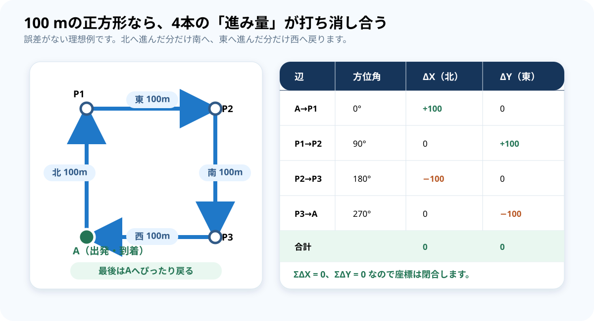
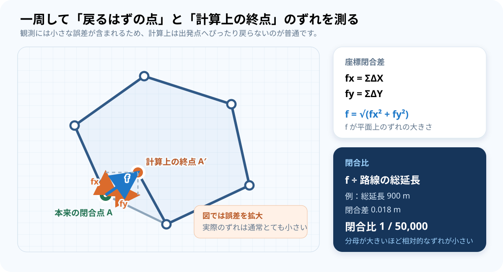
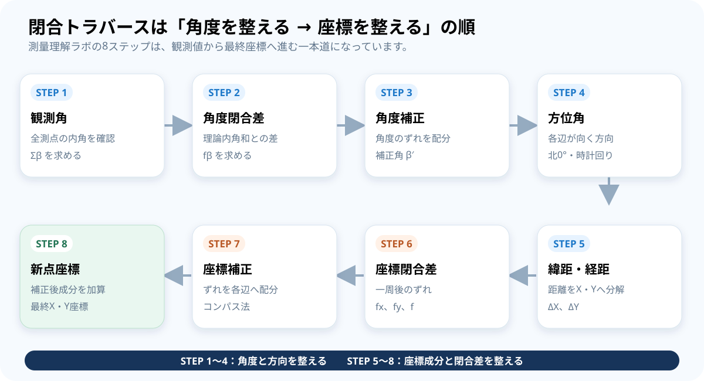

現場：観測する
- 測点にトータルステーション（TS）を据える
- 前後の測点を視準して水平角を測る
- 次の測点までの距離を測る
- 次の測点へ機器を移して繰り返す
Survey Learning Lab / Basic Guide
「角度と距離から、どうして座標が分かるのか」を出発点に、 閉合トラバースの誤差と補正、測量理解ラボとの対応まで図で説明します。
「どちらへ」は角度、「何m進む」は距離を観測して決めます。 一本道ではなく折れ線状に測点をつないでいくため、その形が多角形に見えます。
トラバース測量は、現場の「観測」と、その後の「計算」を分けて考えると理解しやすくなります。

すでにX・Y座標が分かっている点。計算の出発基準になります。
これから座標を求めたい点。P1、P2のように表します。
機器を据えたり、角度・距離の基準にしたりする点です。
隣り合う測点を結ぶ線。各辺について距離と方向を扱います。
測点で前の辺と次の辺がつくる角度。方位角の計算に使います。
辺がどちらを向くかを、北0°から時計回りで表した角度です。
観測角は「2本の辺の間の角度」、方位角は「北から見た1本の辺の方向」です。 名前は似ていますが、役割が異なります。
主な違いは、経路の最後がどこへ到着するかです。 閉合点や既知の終点があると、計算結果のずれを点検できます。

| 種類 | 経路 | 誤差の確認 | このアプリ |
|---|---|---|---|
| 閉合トラバース | 出発点へ戻り、輪になる | 角度と座標の閉合差を確認しやすい | 今回の学習対象 |
| 結合トラバース | 既知点から別の既知点へ到着する | 計算した終点と既知座標を比較できる | 対象外 |
| 開放トラバース | 未知の点で終わり、閉じない | 経路だけでは誤差の発見が難しい | 対象外 |
斜めに進んだ距離を、そのままX・Y座標へ足すことはできません。 まず北方向と東方向の2つの進み量へ分解します。

ΔXはプラス、南へ進むとマイナスΔYはプラス、西へ進むとマイナスSは距離、αはその辺の方位角
理想的に閉じる経路では、北へ進んだ量と南へ進んだ量、
東へ進んだ量と西へ進んだ量がそれぞれ打ち消し合います。
そのためΣΔX = 0、ΣΔY = 0になります。
出発点Aから一周してAへ戻るなら、計算上の終点もAと同じ座標になるはずです。 実際には観測誤差が積み重なり、少し離れたA′へ到着します。

n角形の内角和は(n − 2) × 180°です。
このアプリはA、P1〜P4、Bの6点なので、理論内角和は720°になります。
測点の真上に据わっていない、整準が不十分など。
視準や読取り、記録に小さなずれが含まれるなど。
気象、プリズム、器械条件、入力ミスなど。
最初に角度と方向を整え、その後で距離を座標成分へ分けて閉合差を整えます。

| STEP | 行うこと | 自分への確認質問 |
|---|---|---|
| 1 観測角 | 全測点の内角を足す | 6つの観測角がそろっているか |
| 2 角度閉合差 | 理論内角和との差を求める | 720°から何秒ずれたか |
| 3 角度補正 | 角度閉合差を観測角へ配る | 補正後の内角和は720°か |
| 4 方位角 | 初期方位角から各辺の方向を求める | 北0°・時計回りになっているか |
| 5 緯距・経距 | 各距離をΔX・ΔYへ分ける | 南・西方向の符号はマイナスか |
| 6 座標閉合差 | fx、fy、fと閉合比を求める | 一周後にどちらへ何mずれたか |
| 7 座標補正 | 閉合差を各辺へ配る | 補正量の合計が閉合差を打ち消すか |
| 8 新点座標 | 補正後の成分を既知座標へ足す | 最後に出発点へ戻ったか |
この経路は最後にAへ戻るため、閉合トラバースです。 画面上の多角形は現場を単純化したもので、観測手簿の数値を使って8段階の計算を行います。

P1〜P4をドラッグした形から計算する距離・内角です。 点を動かすと変化します。
現場で測ったと仮定する入力値です。 点をドラッグしても自動では変化しません。
ボタンの位置や入力欄については、 操作手順書の「04 画面の見方」と 「05 初めて使うときの操作」を参照してください。
+12″と、1角あたりの補正−2″を確認するfx、fy、fの向きを図と照合する+1.000 mだけ増やす直ちに失敗という意味ではありません。観測には小さな誤差が含まれます。 閉合差を計算し、規定の許容範囲内か点検することが重要です。 大きすぎる場合は補正の前に原因確認や再測を行います。
観測角は測点で2本の辺の間を測った角度です。方位角は各辺が北から 時計回りに何度の方向を向くかを示します。観測角と初期方位角から、 次の辺の方位角を順番に求めます。
このアプリは測量で使う平面座標の説明に合わせ、Xを北方向、Yを東方向としています。 数学グラフの横軸X・縦軸Yとは見え方が異なるため注意してください。
ドラッグは図形から求める理論値だけを変えます。観測値は現場で実際に読んだと仮定する 独立した数値なので、自動変更しません。両者を比べることが学習目的の一つです。
使えません。補正は、点検して許容できる観測値に含まれる小さなずれを配分する計算です。 大きな閉合差や入力ミスを正当化するものではありません。
使えません。学習用に単純化した初期版で、公共測量等の規程適合、機器補正、 品質判定、成果表作成には対応していません。
| 用語 | この教材での意味 |
|---|---|
| TS | 水平角と距離などを観測するトータルステーション。 |
| 初期方位角 | 最初の辺が向く既知の方向。後続辺の方位角計算の出発点。 |
| 緯距 ΔX | 1本の辺について、北・南方向へ進む座標成分。 |
| 経距 ΔY | 1本の辺について、東・西方向へ進む座標成分。 |
| 角度閉合差 fβ | 観測内角和と理論内角和との差。 |
| 座標閉合差 fx・fy | 一周したX成分・Y成分の合計。理想的にはそれぞれ0。 |
| 合成閉合差 f | fxとfyを合成した平面上のずれの大きさ。 |
| 閉合比 | 路線の総延長に対して閉合差がどの程度かを示す比。 |
| コンパス法 | 座標閉合差を各辺の長さに比例させて配分する調整方法。 |